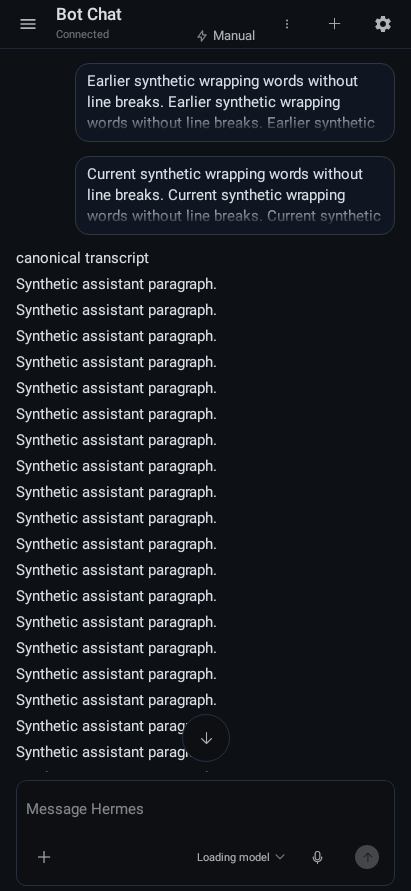
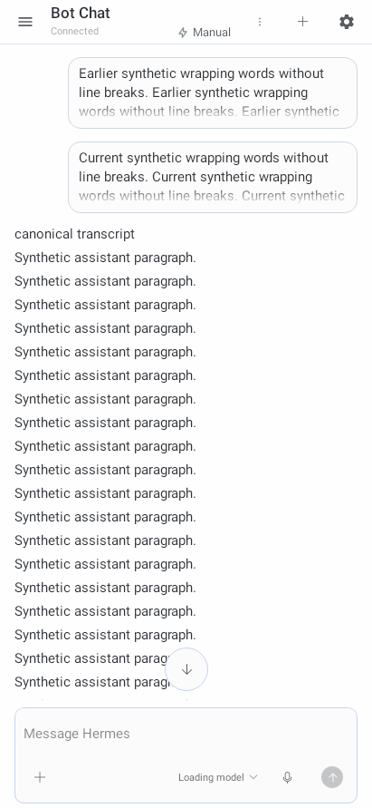
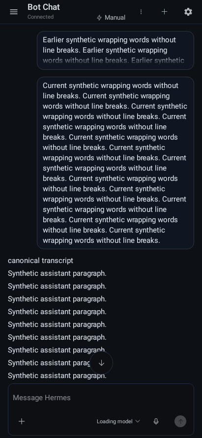
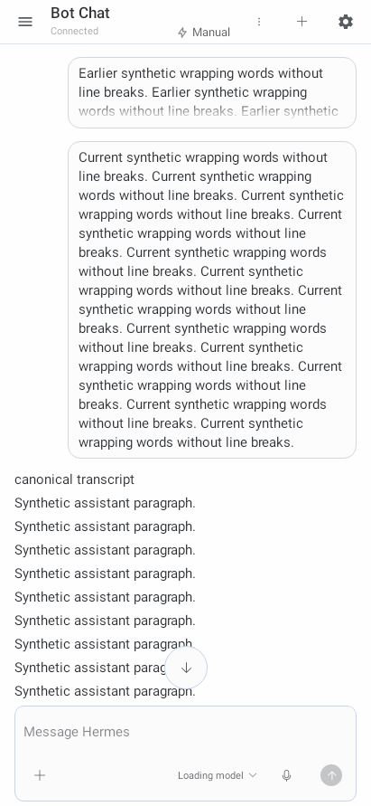
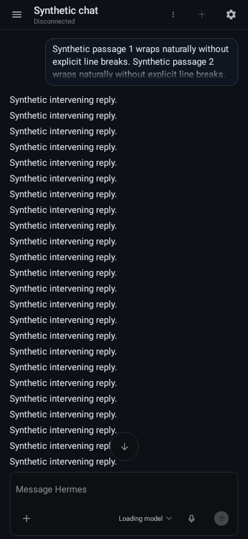
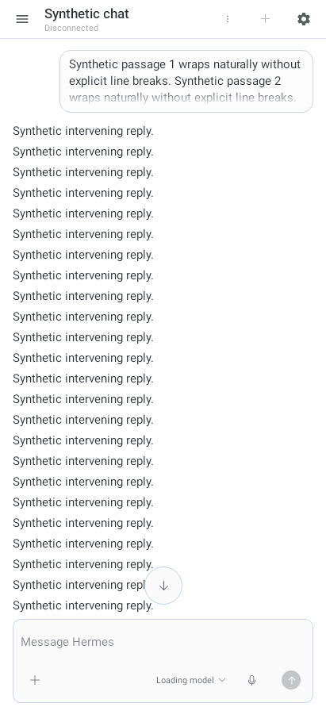
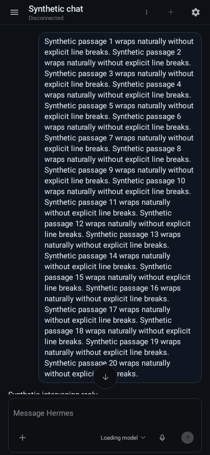
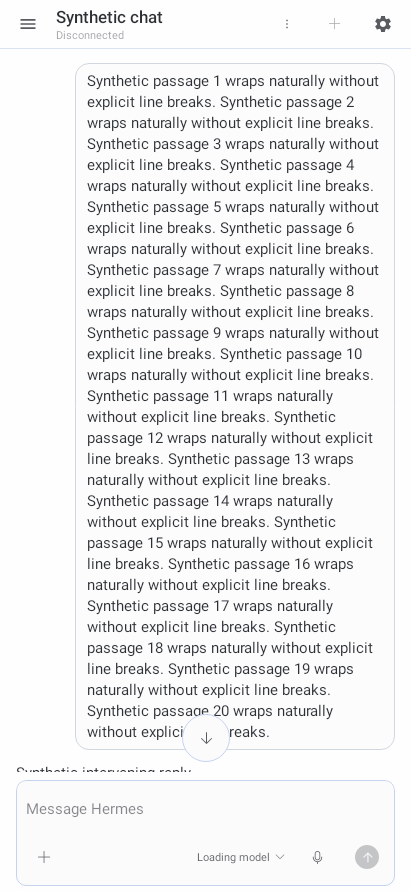
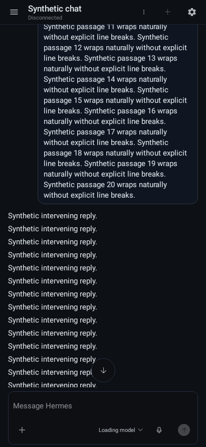
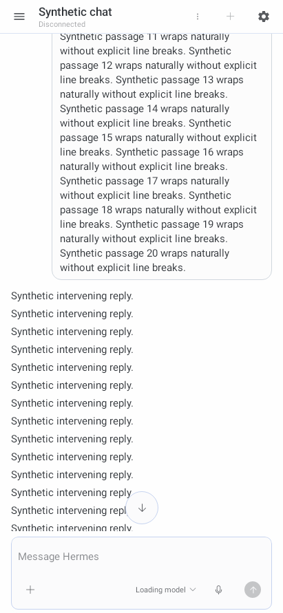
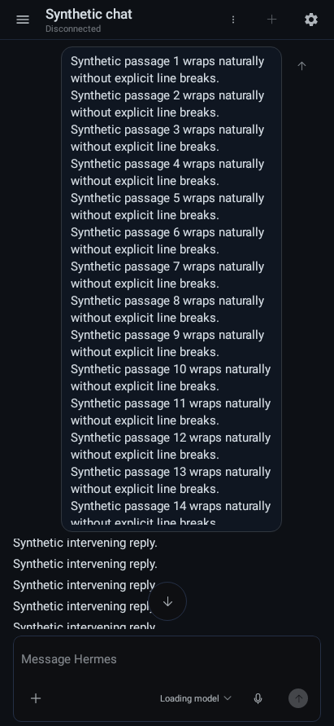
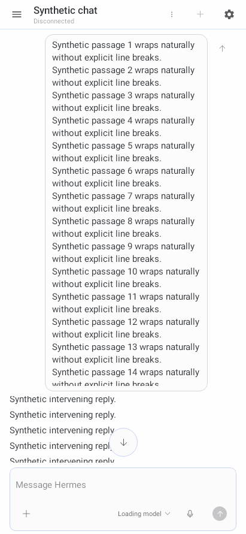
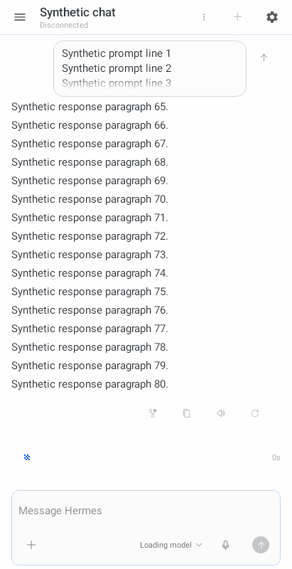

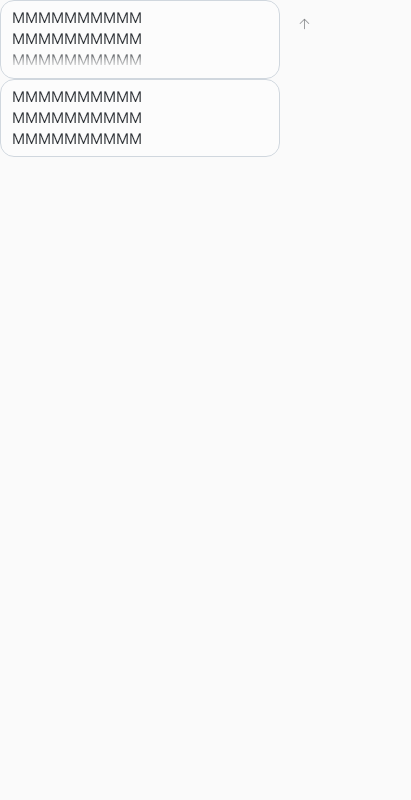
Related to #403. New Android images are synchronous native Robolectric window draws of production Compose ChatScreen, with synthetic text only. Bot images traverse both ViewModels, the canonical Bot repository, the live-session repository and correlated RPC parsing; only the transport is synthetic. Ordinary images mount production ChatScreen directly. These are not mockup images, emulator, physical-device, IME, TalkBack or live-Gateway acceptance.
Stored Desktop fallback: production components captured at 36922ad064d65dcf25f8f48df81e1ccf9a55de67, with original manifest and image hashes unchanged. Current source was inspected at 41dfcf2c1bd7146d4ad46aea08b7dd007900602e, not newly rendered. Different synthetic text and shell scope mean contract comparison, not pixel parity. Paired physical acceptance remains pending #72.
Both inline bodies now cap at three actual rendered lines, fading only line three on overflow. Tap reveals complete selectable inline text; an expanded historical source remains painted through its middle. Once the entire source leaves, sticky expansion is bounded with inner scroll and a separate Return arrow. No new visible copy or action order. The existing floating jump-to-latest control can overlay reply text; that unchanged chrome is not a disclosure regression.
Causal proof: identical final Bot test bytes on baseline 072df3eec91ca75624f2dea67122cd346ff0e1a9 fail both dark/light cases: historical and current heights 351px instead of independently measured 79px. Repaired source passes. See scope and tests and exact source/capture manifest.













